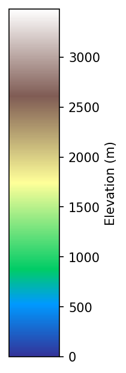

⚙️ 設定
風場切換
冬季 (DJF)
夏季 (JJA)
白天
夜晚
粒子參數
粒子數
4000
實際流線數
4000
速度係數
0.6
尾跡係數
0.90
最大速度
5
重置係數
0.40
離地高度(m)
0
線條粗細
0.80
流線平滑
0.88
流線不跟地形跑
色帶
多色階
白色系
藍色系
橘色系
模式地形
顯示模式地形
透明度
0.80
顯示AERMOD地形
透明度
0.80
顯示縣市邊界
顯示縣市名稱
顯示風向箭頭(放大到某程度才會出現)
滑鼠查詢風速/風向
圖釘
新增圖釘模式
清除全部圖釘
匯出 pins.json
飛行視角 A
飛行視角 B
縣市視角
台北市
新北市
基隆市
桃園市
新竹市
苗栗市
台中市
南投市
彰化市
雲林斗六
嘉義市
台南市
高雄市
屏東市
台東市
花蓮市
宜蘭市

風速 (m/s)
白色系
初始化中…